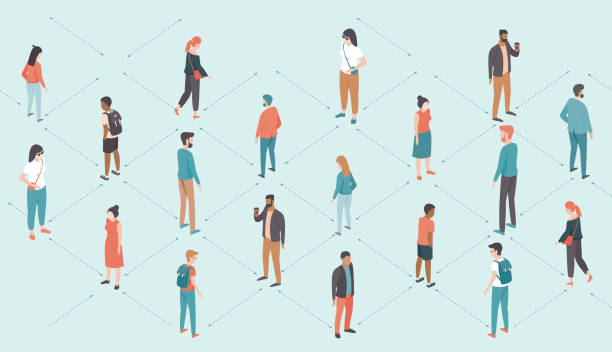

Social Distancing Maintenance System for Malls and Warehouses
Aug 2020 - April 2021

- Contributed to the development of a user-friendly interface for administrators to monitor and
manage social distancing compliance.
- Designed and developed the AI powered application to detect and track individuals in
real-time.
- Collaborated with team to integrate the application with existing CCTV
infrastructure, ensuring seamless deployment.
- Successfully trained and tested the model, achieving a high accuracy of 79.3% in detecting
social distancing breaches.